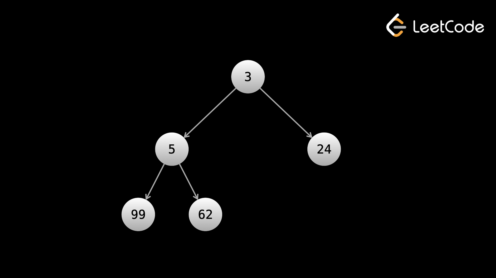

Куча — это структура данных, которая является реализацией priority queue.
Обратите внимание, что приоритетная очередь представляет собой абстрактную структуру данных. Куча — это один из многих способов реализации очереди с приоритетами. Однако люди часто используют эти два термина как синонимы. В этом курсе мы будем использовать термин «куча».
Куча — это контейнер, в котором хранятся элементы и поддерживаются следующие операции:
Куча также может найти максимальные элементы вместо минимальных. Если куча настроена на поиск/удаление минимального элемента, она называется минимальной кучей. Если он настроен на поиск/удаление максимального элемента, это называется максимальной кучей.
Возможность находить элемент max/min за постоянное время, требуя при этом только логарифмического времени для поддержания этой способности посредством изменений, делает кучу чрезвычайно мощной структурой данных.
Как и хэш-карта, все основные языки программирования поддерживают кучу, поэтому вам не нужно реализовывать ее самостоятельно. Что касается решения алгоритмических задач, вас действительно волнует только интерфейс, а не то, как он реализован. Но, как и в случае с хэш-картами, все равно полезно понимать реализацию, если вас об этом спросят на собеседовании.
Для краткости в этой статье мы поговорим о минимальных кучах, хотя для максимальных куч логика та же.
Существует несколько способов реализации кучи, хотя наиболее популярный способ называется двоичной кучей с использованием массива. В главе о деревьях и графах мы видели, что двоичные деревья обычно реализуются с помощью объекта Node.
Бинарная куча реализует двоичное дерево, но содержит только массив. Идея состоит в том, что каждый элемент массива является узлом дерева. Наименьший элемент в дереве является корнем, и в каждом узле сохраняется следующее свойство: если A является родительским элементом B, то A.val <= B.val. Обратите внимание, что это свойство напрямую подразумевает, что корень — это наименьший элемент.
Другое ограничение состоит в том, что дерево должно быть полным деревом.
Отношения родитель-потомок выполняются с использованием математических вычислений с индексами. Первый элемент с индексом 0 является корнем, затем элементы с индексами 1 и 2 являются дочерними элементами корня, элементы с индексами 3 и 4 являются дочерними элементами элемента с индексом 1, а элементы с индексами 5 и 6 являются дочерними элементами элемента с индексом 2 и так далее. Если узел имеет индекс i, то его дочерние элементы имеют индексы 2i + 1 и 2i + 2. Когда элементы добавляются или удаляются, выполняются операции для поддержания вышеупомянутого свойства parent.val <= child.val. Количество необходимых операций логарифмически зависит от количества элементов в куче, и этот процесс известен как «всплывание»

Существующий массив элементов также можно преобразовать в кучу за линейное время, хотя этот процесс и
сложен. К счастью, некоторые основные языки программирования имеют для этого встроенные методы.
Помните: вам не следует слишком беспокоиться о том, как реализованы кучи. Главное, чтобы вы понимали
интерфейс. Мы включили подробности реализации в эту статью для полноты картины.
Во многих задачах использование кучи может улучшить временную сложность алгоритма с O(n2) до O(n * logn), что является огромным улучшением (для n = 1 000 000 это в 50 000 раз быстрее). Куча — отличный вариант, когда вам нужно неоднократно найти максимум или минимум чего-либо.
Вот краткое описание интерфейса кучи на основных языках:
Примечание. Некоторые языки по умолчанию реализуют минимальную кучу, а некоторые — максимальную.
Если вы имеете дело с числами и хотите иметь дело с типом кучи, противоположным тому, который реализует ваш
язык, простой способ сделать это — умножить все числа на -1.
Вот интерактивная площадка, демонстрирующая использование очереди с кучей/приоритетами.
print(heapq.heappop(heap))